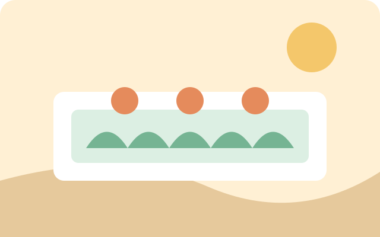

Nossa missão
Conectar recursos, tempo e conhecimento a projetos que fortalecem pessoas e comunidades.
● Solidariedade que vira transformação
Conectamos pessoas dispostas a ajudar com iniciativas que fazem a diferença todos os dias. Encontre uma causa que combina com você.
Uma comunidade que cuida.
Todo gesto pode abrir um caminho.

Quem somos
A Conecta Social é uma organização fictícia criada para demonstrar como uma presença digital pode aproximar iniciativas sociais de quem deseja contribuir.
Conectar recursos, tempo e conhecimento a projetos que fortalecem pessoas e comunidades.
Uma sociedade em que a participação cidadã seja acessível, colaborativa e transparente.
Empatia, inclusão, responsabilidade, respeito e prestação de contas.
Faça parte

Arrecadação de alimentos e apoio a famílias da região.
Conheça a iniciativa →
Ações coletivas para cuidar dos espaços compartilhados.
Conheça a iniciativa →Sua participação importa
Doe seu tempo, compartilhe uma causa ou ajude a manter uma iniciativa viva.
Fale com a gente
Tem uma dúvida, ideia ou quer propor uma parceria? Entre em contato com nossa equipe.